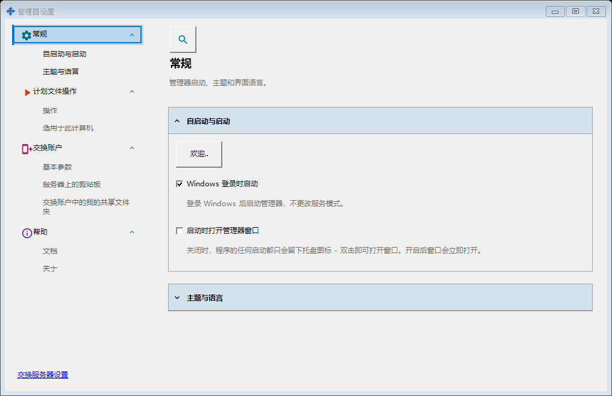
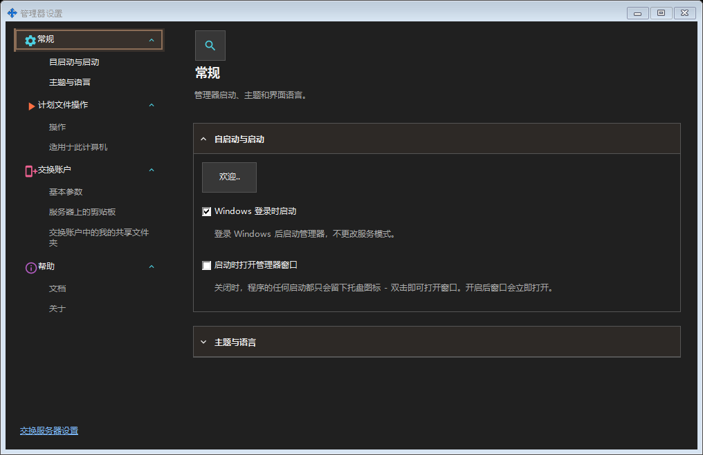
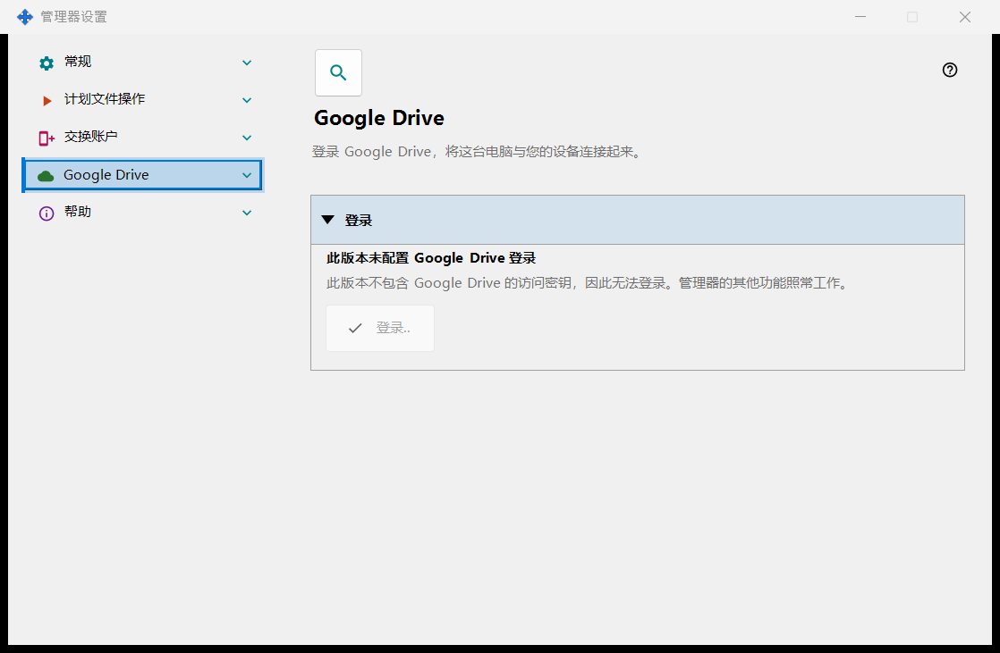
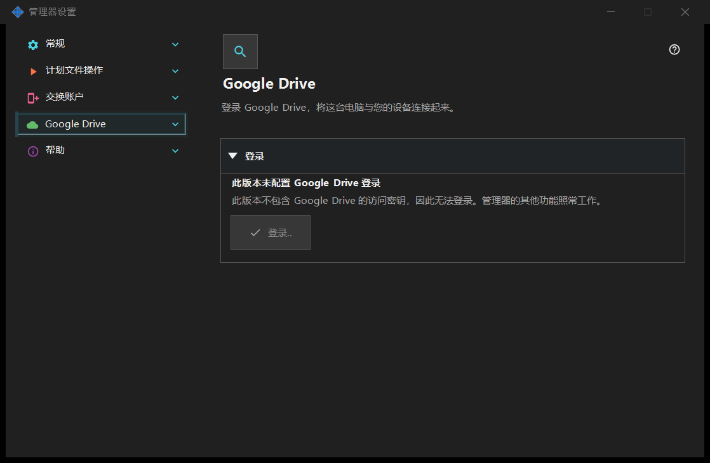

管理器设置
管理器设置
用途说明
启动、主题、语言、远程账户、发布、剪贴板和计划文件操作属于管理器，无需安装本地服务器。 如果已安装 SFTP 共享组件，其页面会在此窗口中构成一个分组。


操作顺序
从托盘或组件链接打开。打开或关闭窗口不会启动或停止服务器。远程登录无需本地服务器。
界面元素
管理器设置
启动、主题、语言、远程账户、发布、剪贴板和计划文件操作属于管理器，无需安装本地服务器。 如果已安装 SFTP 共享组件，其页面会在此窗口中构成一个分组。 从托盘或组件链接打开。打开或关闭窗口不会启动或停止服务器。远程登录无需本地服务器。
管理器设置
启动、主题、语言、远程账户、发布、剪贴板和计划文件操作属于管理器，无需安装本地服务器。 如果已安装 SFTP 共享组件，其页面会在此窗口中构成一个分组。 从托盘或组件链接打开。打开或关闭窗口不会启动或停止服务器。远程登录无需本地服务器。
Google Drive
- 打开 Share Manager，打开「管理器设置」，然后选择「Google Drive」页面。您需要一个 Google 账号和网络连接。不需要适用于 Windows 的 Google Drive 应用，您也无需自己创建任何 Google 项目、密钥或设置。
- 点击「登录..」。默认浏览器会打开 Google 的页面：选择账号，在那里登录，并确认所显示的访问权限。密码只在 Google 的页面上输入，绝不会在本应用中输入。您也可以在那里取消登录或拒绝访问；这样不会保存任何内容。
- 返回 Share Manager：粗体行显示「已登录 Google Drive」，您可以关闭浏览器标签页。如果浏览器没有打开，请检查默认浏览器，然后再次点击「登录..」。如果浏览器显示错误，或页面一直显示「正在等待在浏览器中登录..」，请点击「取消」，然后重新登录。登录状态保留在这台电脑上：关闭 Share Manager、退出 Windows 或重启电脑后，只要 Google 保持该访问权限有效，就会在不打开浏览器的情况下再次使用它。
- 要与另一台设备交换，请在那台设备上也使用同一个 Google 账号登录，在该设备自己的 Google Drive 页面上：在另一台电脑上是其 Share Manager，在手机上是 Android 应用。登录不同 Google 账号的设备彼此看不到对方，并且两台设备都需要带有 Google Drive 页面的应用版本。仅仅登录不会自行发送任何内容：通过 Google Drive 传递的内容在剪贴板、计划操作以及「Google Drive 上的队列」分组的帮助中有说明。
- 应用只请求访问它在您 Google Drive 上自己的隐藏文件夹（范围 drive.appdata）。它不会查看、浏览或同步您 Google Drive 上的其他文件，也不会获得电子邮件地址和个人资料数据。您的设备相互传递的内容会占用您 Google Drive 的空间；「Google Drive 上的队列」分组会显示这些内容，并允许您删除数据包。「在此设备上退出登录」会从隐藏文件夹中删除这台电脑的记录，在 Google 处撤销访问权限，并删除保存在这台电脑上的登录信息。之后，Google 也可能终止使用同一账号登录的其他设备上的访问权限；如果其中某台设备提示其登录已失效，请在那台设备上重新登录。要重新连接这台电脑，请点击「登录..」。
- 如果出现问题，状态下方的一行会说明发生了什么。无法连接，或 Google 返回错误：应用会自动重试，您无需做任何事。登录已取消或访问被拒绝：想登录时再次点击「登录..」。账号由组织管理，且其管理员阻止了该应用：请使用其他 Google 账号登录，或联系管理员。提示登录已失效：访问权限已被撤销或已过期，请再次点击「登录..」。您的 Google Drive 没有可用空间：请释放一些空间，或从队列中删除数据包。每日上传上限：请等到第二天。「此版本未配置 Google Drive 登录」，或提示此安装的登录密钥已不再被接受：请从官方网站安装应用的当前版本；在此期间 Share Manager 的其余功能照常工作。
此页面让这台电脑登录您自己的 Google 账号，使应用可以使用您 Google Drive 上属于它自己的私有隐藏文件夹。点击「登录..」：默认浏览器会打开，您在 Google 处确认访问，Google 通过本地地址将结果返回到这台电脑；之后即可关闭浏览器标签页。唯一请求的权限是访问您 Google Drive 上属于应用自己的隐藏文件夹（范围 drive.appdata）：应用看不到您 Google Drive 上的任何其他文件，也不会获得电子邮件地址或个人资料数据。如果 Google 授予的访问权限与所请求的不同，登录会被拒绝。粗体行显示当前状态。「未登录 Google Drive」：可使用「登录..」；如果访问权限已被撤销或已过期，下方一行会说明，并请您重新登录。「正在等待在浏览器中登录..」：请在浏览器中完成登录，或点击「取消」。「已登录 Google Drive」：这台电脑已与您的 Google Drive 关联，并显示其名称和简短标识符。「Google Drive 当前不可用」：下方一行给出原因：无法连接、已达到每日上传上限、您的 Google Drive 没有可用空间，或 Google 返回错误；无法连接或出现错误时，应用会自动重试。退出登录进行期间会显示「正在退出 Google Drive..」。「在此设备上退出登录」只询问一个问题，默认答案是「否」。选择「是」后，它会在 Google 处撤销访问权限，从您 Google Drive 的隐藏文件夹中删除这台电脑的记录，并删除保存在这台电脑上的登录令牌；按钮下方的一行会说明已删除的记录数，或说明 Google 未确认撤销，此时您可以在 Google 账号设置中手动撤销。在没有 Google 访问密钥的版本中，页面显示「此版本未配置 Google Drive 登录」，「登录..」不可用，管理器的其他功能照常工作。 只要此电脑已登录，Share Manager 的剪贴板命令也可通过 Google Drive 工作，计划操作可以把「通过 Google Drive」用作来源或目标，查看器的资源列表会显示你的其他设备在那里发布的文件夹。「Google Drive 上的队列」分组显示你的设备之间正在传递什么以及占用多少空间；选择一个数据包并点击「删除数据包」即可将其从你的 Google Drive 中移除。通过 Google Drive，文件和剪贴板保存在您自己的 Google 账户中，如同您在 Google Drive 上的其他文件；交换服务器不参与此过程。


管理器设置
启动、主题、语言、远程账户、发布、剪贴板和计划文件操作属于管理器，无需安装本地服务器。 如果已安装 SFTP 共享组件，其页面会在此窗口中构成一个分组。 从托盘或组件链接打开。打开或关闭窗口不会启动或停止服务器。远程登录无需本地服务器。
管理器设置
在帮助／关于中选择导出日志以供分析。收集本地 Media Exchange Server、SFTP、安装及辅助工具、管理器和查看器保留的全部日志，服务器停止时也可使用。不会下载远程日志。敏感信息会被删除；截断、跳过或无法读取的来源会在检查窗口列出，并标明压缩包不完整。发送给作者会打开附有已检查 ZIP 的邮件草稿，由您决定发送。附件功能失败时请手动添加 ZIP。在文件资源管理器中显示会选中 ZIP：复制后在目标文件夹粘贴。打开失败时可在检查窗口选择并复制路径。显示文件或请求邮件后压缩包会保留，取消邮件也不删除；在这些操作前取消则会删除。后续导出会清理超过七天且未使用的压缩包，需要长期保存请复制到其他位置。超过 20 MiB 的压缩包仍可在资源管理器中使用，但禁止交给邮件程序。